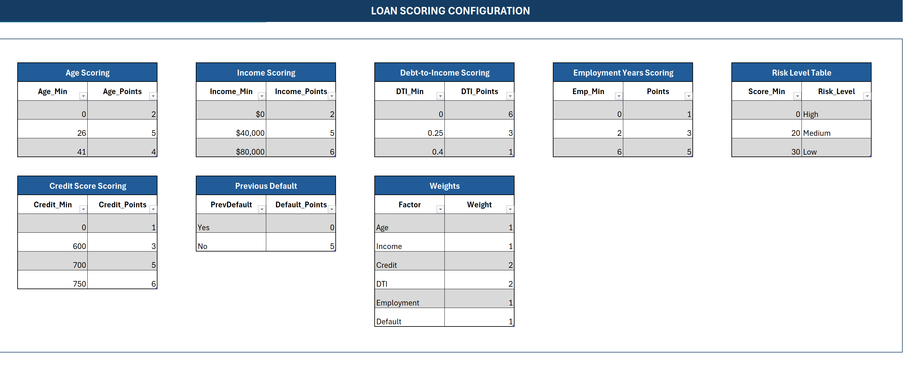
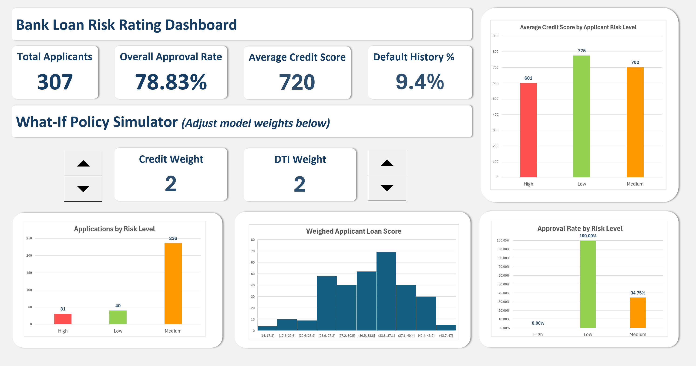

Bank Loan Risk Rating Dashboard (Excel)
Overview
Built a full loan-risk simulator in Excel that scores 300+ applicants, classifies them into risk tiers, and shows how approval rates shift when credit or DTI weights change. Designed configurable scoring tables, dynamic XLOOKUP logic, and a real-time dashboard that lets managers test lending policies and visualize portfolio risk.
What I Did
- Defined the business objective, metric targets, and analysis scope.
- Built and validated the data, modeling, and reporting workflow.
- Packaged outputs for stakeholder interpretation and decision support.
Results/Impact
Delivered an analysis workflow with decision-ready outputs and reusable artifacts.
Tech Stack
- Dashboard, Excel, Risk Modeling, XLOOKUP
Deliverables
Project Notes
Description: Built a full loan-risk simulator in Excel that scores 300+ applicants, classifies them into risk tiers, and shows how approval rates shift when credit or DTI weights change. Designed configurable scoring tables, dynamic XLOOKUP logic, and a real-time dashboard that lets managers test lending policies and visualize portfolio risk. Skills Demonstrated: Dashboard, Excel, Risk Modeling, XLOOKUP Project Status: Completed
I wanted to understand how banks score loan applicants and how small policy changes can shift approval rates. So, I built an interactive risk-rating model in Excel that scores 300+ simulated applicants, classifies them into risk tiers, and shows how portfolio approval changes when credit or debt-to-income weights are adjusted.
The project combines a full scoring configuration system, a working data model, and a professional-grade dashboard that mirrors the kind of portfolio monitoring tools used in finance and lending.
Executive Summary
- Objective: Build a transparent loan risk model with adjustable scoring and dynamic portfolio insights.
- Scope: 3-sheet Excel system (Configuration, Applicants, Dashboard) with formulas, XLOOKUP logic, and interactive weight controls.
- Outcome: A functional credit-risk simulator that visualizes approval trends and helps explain how score weighting drives lending decisions.
Objective
Design a model that can:
- Evaluate applicant data (age, income, credit score, debt ratio, etc.) using point-based scoring.
- Assign a total weighted risk score and classify applicants as High, Medium, or Low risk.
- Simulate policy adjustments by changing the weight of specific factors like Credit Score or Debt-to-Income ratio.
- Visualize portfolio health through KPIs and charts that update dynamically.
Loan Scoring Configuration
Each scoring factor is fully configurable. Tables define how many points an applicant earns for different ranges:
- Age Scoring - Rewards experience while avoiding overexposure to young, unproven applicants.
- Income Scoring - Adds stability points at higher income thresholds.
- Debt-to-Income Scoring - Penalizes excessive leverage.
- Employment Years Scoring - Values job consistency.
- Credit Score Scoring - Maps ranges to increasing trust levels.
- Previous Default - Zero points if -Yes,- full points if -No.-
The Weights Table lets you rebalance importance across factors. For instance, increasing the Credit or DTI weight instantly changes every applicant-s total score. The Risk Level Table then translates those totals into final classifications: High, Medium, or Low risk.

Applicant Data Engine
The applicant sheet acts as a live model engine. It holds raw data for 300+ records and processes each row through lookup formulas and conditional logic.
- Columns: demographics, financial variables, scoring by factor, weighted total, risk level, and final decision.
- Logic: XLOOKUPs retrieve point values from configuration tables. Weighted totals are calculated dynamically.
- Decision Rule: Loans are auto-approved for Low-risk, sometimes approved for Medium-risk (40% chance), and rejected for High-risk.
Conditional formatting highlights approval status and risk categories. The dataset effectively becomes a full miniature credit department, complete with applicant scoring, decision outcomes, and visual segmentation bands (Income, Credit, DTI).

Dashboard Overview
The final dashboard ties it all together. It-s split into three clear sections:
1. Portfolio KPIs
Shows total applicants, overall approval rate, average credit score, and default history (all updating automatically as weights change).
2. What-If Policy Simulator
Two spinner controls adjust the weighting of Credit Score and DTI. Managers can test how tightening or loosening criteria affects overall approvals in real time.
3. Visual Statistics
Three interactive visuals show:
- Applications by Risk Level - portfolio composition.
- Weighted Loan Score Distribution - balance of creditworthiness.
- Approval Rate by Risk Level - efficiency vs. prudence trade-off.

Scoring Logic Example
Every applicant-s WeightedTotal follows this structure:
= (Age_Points * Age_Weight) +
(Income_Points * Income_Weight) +
(Credit_Points * Credit_Weight) +
(DTI_Points * DTI_Weight) +
(Employment_Points * Employment_Weight) +
(Default_Points * Default_Weight)The score then maps through the Risk Level Table using an XLOOKUP:
=XLOOKUP(Q4,risk[Score_Min],risk[Risk_Level],,-1)Finally, the Decision column determines approval, using an applicant-s credit score as the deciding factor:
=IF(R4="High","Rejected",
IF(R4="Low","Approved",
IF(H4>=700,"Approved",
IF(RAND()<0.3,"Approved","Rejected"))))This blend of business logic and randomization makes the dataset behave like a real-life portfolio.
Insights and Observations
Running simulations revealed that small weighting shifts have huge downstream effects:
- Increasing DTI Weight by 1 point reduced approvals by nearly 10%.
- Raising Credit Weight rewarded strong credit but slightly penalized high-income applicants with moderate scores.
- The majority of approved loans came from the Medium risk band, showing that most lending volume lives in the -gray zone.-
These results mirror real banking behavior, as every adjustment to a credit policy changes portfolio health and risk exposure.
What I Learned
I learned that credit risk modeling is a balancing act between fairness and caution. Building the configuration tables made me think in a way that a policy analyst would, not just a data student. The simulator showed how subjective -weights- directly shape real-world outcomes.
It also taught me how powerful Excel can be as an analytical sandbox when designed intentionally, with structure, logic flow, and a visual narrative all in one file.
Conclusion
- Built a fully functioning bank loan risk simulator in Excel.
- Modeled scoring logic for six key applicant factors.
- Automated approval decisions through dynamic lookups.
- Designed an interactive dashboard with real-time policy adjustment.
- Identified approval patterns and risk trade-offs through simulation.
Appendix
Attribution
Designed and developed by Markuss Saule.